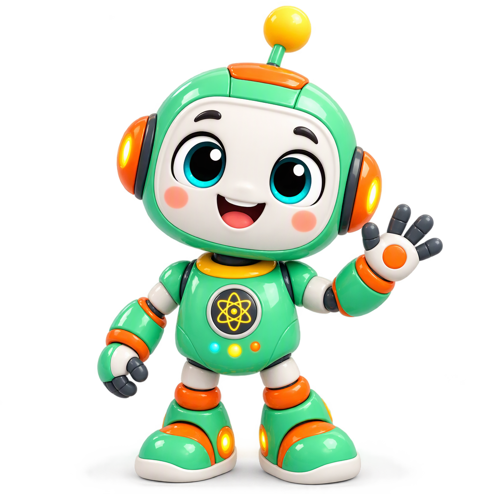
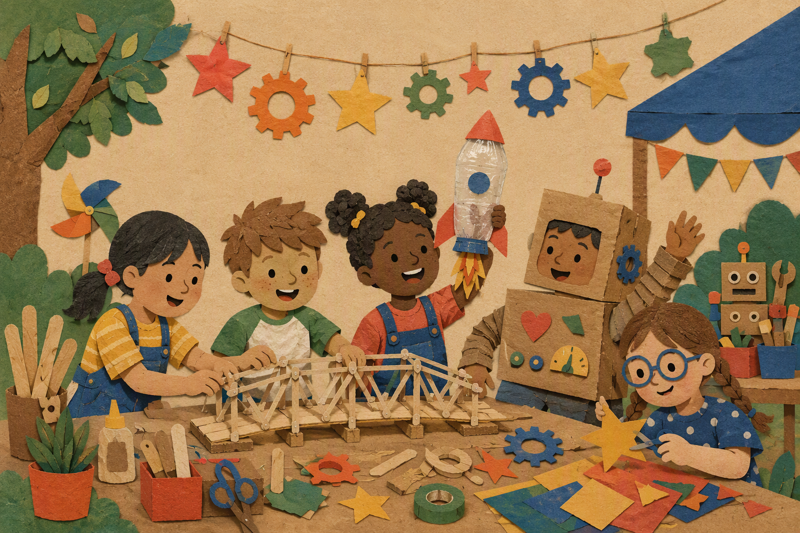

Four homepage concepts — pick a direction
Each is a full, self-contained homepage mockup built around your notes: playful, modern, bright, motion-rich, generous with space. The same content and structure underlies all four, so you're comparing pure look & feel.
Open each in a browser — hover, scroll, and resize to feel the motion.
Sticker Lab
The boldest of the four. Cream paper canvas, thick ink outlines, hard offset shadows, a wiggling robot mascot with sticker badges, blob-shaped buttons, and marquee tickers. Closest in spirit to the Bitta reference — a site that feels like a really good sticker sheet.
Open mockup →
Impact Editorial
The most donor-and-parent-facing. Warm cream tones, a flat illustrated hero, huge count-up statistics (500+ / 20+ / 100%), an indexed program list with hover fills, and quiet underline micro-interactions. Closest to the illustration reference — lots of air, nothing cluttered.
Open mockup →
Mission Control
The "cool older sibling" option. Deep-navy blueprint aesthetic with a glowing circuit-robot schematic, terminal typewriter hero, HUD-cornered stat readouts that count up, and programs listed like running system modules. Reads modern and techy while staying friendly.
Open mockup →
Workshop Scrapbook
The most human and handmade. Kraft-paper background, washi-taped polaroids that straighten when you hover them, handwritten captions, a ruled index-card stats section, and a perforated donation ticket. Feels like the community bulletin board at an actual maker space.
Open mockup →